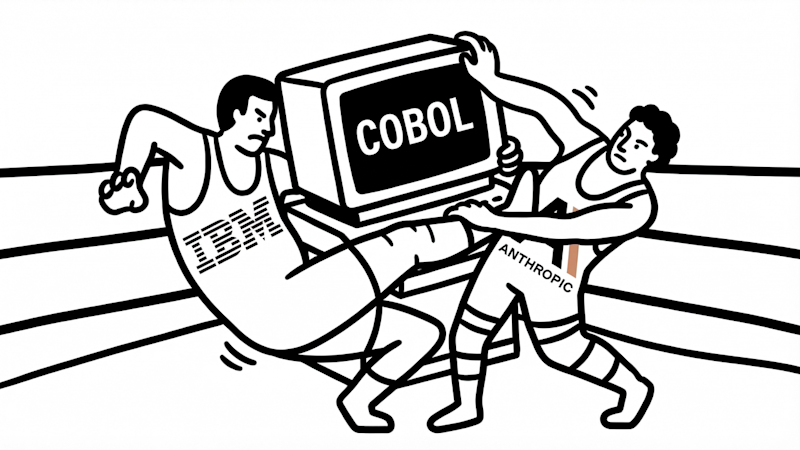
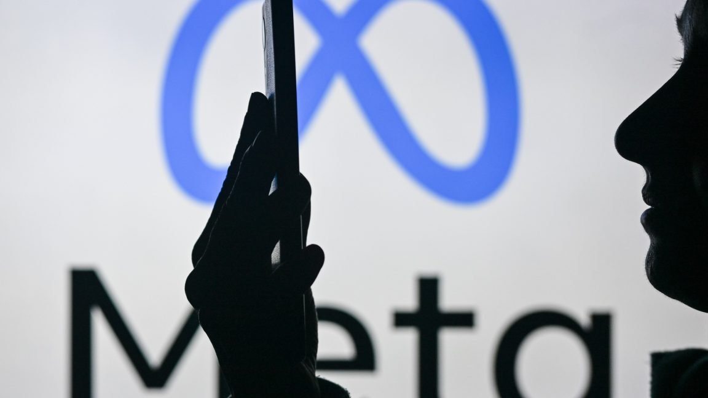
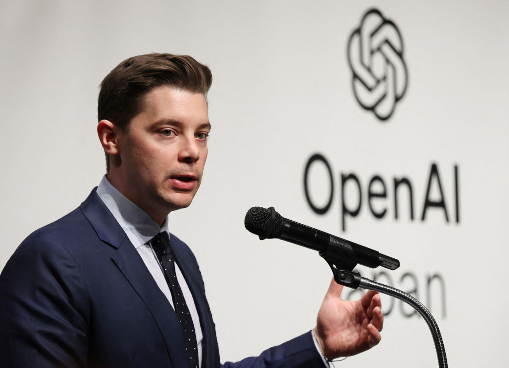
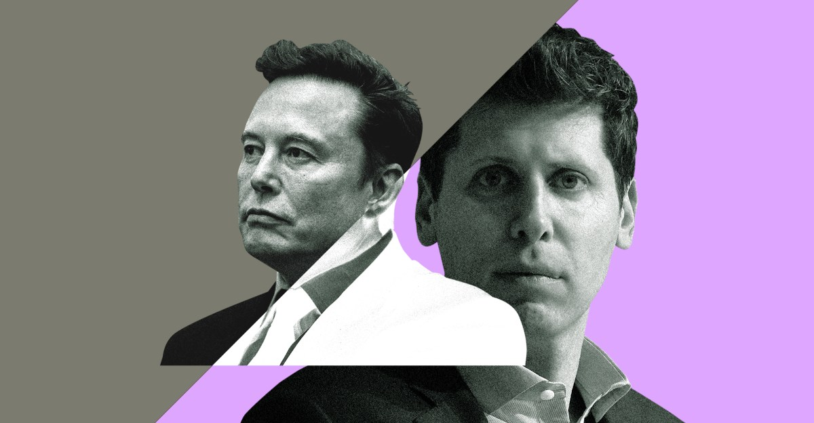
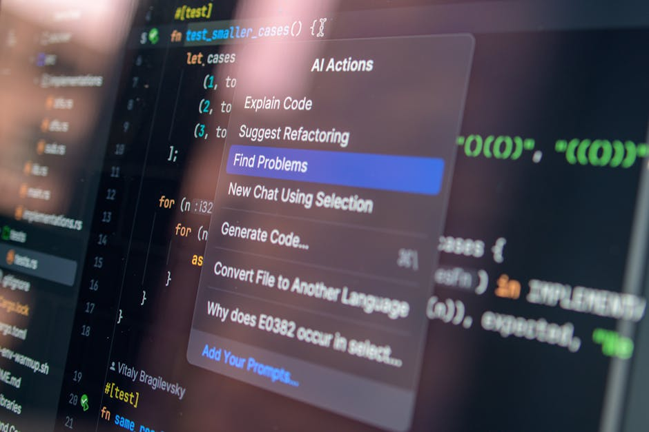

AI DAILY
AI 行业日报
2026年2月25日 · 精选 10 条
01政策监管
Anthropic 拒绝五角大楼要求：不会移除 AI 安全护栏
五角大楼威胁将 Anthropic 列入《国防生产法》供应链风险名单，原因是 Anthropic 拒绝移除 Claude 模型中针对监控和自主武器的安全限制。据知情人士透露，国防部多次施压要求获得"无护栏版本"的 Claude，均遭拒绝。
Anthropic CEO Dario Amodei 回应称"安全护栏是产品设计的一部分，不是可拆卸的配件"。公司正与国会议员沟通，争取立法层面明确 AI 军事应用的边界。多位参议员已公开表态支持 Anthropic 的立场。
INSIGHT
这场博弈的实质是：谁来定义"安全"的边界。五角大楼手里有供应链制裁的牌，Anthropic 手里有国会和舆论。如果 DPA 名单真被启用，等于给所有 AI 公司划了一条线——要么配合军方，要么承受采购禁令。
02行业动态
Claude COBOL 翻译工具发布，IBM 市值蒸发 400 亿美元

Anthropic 发布 Claude 的 COBOL-to-Java 翻译工具后，IBM 股价单日下跌 7.2%，市值蒸发约 400 亿美元。华尔街分析师认为，这直接威胁 IBM 每年超过 200 亿美元的大型机维护和现代化服务收入。
但多位资深大型机工程师指出，市场反应过度了。企业运行大型机的原因是可靠性和事务处理能力，不是因为被 COBOL 绑架。翻译代码只是第一步，迁移整个运行环境、重建几十年积累的业务逻辑，才是真正的工程挑战。
INSIGHT
400 亿蒸发看似吓人，但做过大型机迁移的人都知道——代码翻译可能只占整体工程量的 10%。数据库、中间件、事务调度、合规审计，每一层都是坑。IBM 真正的护城河不是 COBOL，是那套跑了 30 年没人敢动的生产环境。
03产品发布
Anthropic 发布 Claude Cowork：面向企业的 AI 协作平台
Anthropic 推出企业级产品 Claude Cowork，主打 AI 与人类的"协同工作"模式。产品支持 MCP 连接器接入企业内部系统，内置插件市场，可直接操作 Excel、PPT、Salesforce 等工具，同时推出 Remote Control 功能让 AI 代理完成多步骤工作流。
首批客户案例包括 Spotify（用于播客内容分析）、Novo Nordisk（临床试验数据处理）和 Salesforce（CRM 自动化）。定价采用按工作流计费模式，企业版起步价 $60/人/月，比 Claude Pro 贵 3 倍。
INSIGHT
MCP 连接器 + 插件市场 + Remote Control，这套组合拳瞄准的不是 ChatGPT Enterprise，而是 Zapier 和 ServiceNow 的领地。按工作流计费也很聪明——企业愿意为可量化的自动化产出买单，而不是为"每个人都能聊天"付费。
04融资收购
Meta 与 AMD 签 600 亿美元芯片协议，或持有 AMD 10% 股权

Meta 与 AMD 达成一笔价值 600 亿美元的芯片采购协议，覆盖算力达 6GW。协议包含业绩对赌条款：若 AMD 芯片性能达标，Meta 可获得最多1.6 亿股 AMD 股票，按当前股价约相当于 AMD 10% 的股权。
这笔交易与 OpenAI 此前和 AMD 签的类似协议结构相似，都是"采购+股权激励"模式。AMD 股价盘后上涨 4.8%。分析师指出，Meta 此举旨在降低对英伟达的依赖——目前 Meta 超过 80% 的 AI 算力来自英伟达 GPU。
INSIGHT
600 亿不只是买芯片，更像是在投资一条备用供应链。业绩对赌换股权的设计让 Meta 成了 AMD 的战略股东，等于用采购量绑定了技术路线。英伟达的垄断溢价还能撑多久，取决于 AMD 的 MI 系列能不能真正跑起来。
05融资收购
前 Google TPU 团队创办的 MatX 完成 5 亿美元 B 轮融资
AI 芯片初创公司 MatX 完成 5 亿美元 B 轮融资，由 Jane Street 领投，Leopold Aschenbrenner 的 AI 投资基金跟投。MatX 创始团队来自 Google TPU 核心团队，目标是打造专为 Transformer 架构优化的 ASIC 芯片。
公司计划通过 TSMC 代工，首批芯片预计 2027 年交付。MatX 声称其芯片在 Transformer 推理任务上的性价比将是英伟达 H100 的 10 倍以上。此轮融资后估值未披露，但知情人士称已超过 20 亿美元。
INSIGHT
Jane Street 领投 + Aschenbrenner 跟投，量化交易资本和 AI 末日论者站在了同一边。MatX 的赌注是 Transformer 架构至少还能统治 3-5 年，所以值得为它做专用硬件。2027 年交付意味着要跟英伟达 Rubin 系列正面对决，时间窗口很紧。
06观点评论
OpenAI COO：AI 还没有真正渗透进企业业务流程

OpenAI COO Brad Lightcap 在一次行业活动上坦言，"我们还没有看到 AI 真正渗透进企业的核心业务流程"。他表示大多数企业用 AI 还停留在文档摘要和客服问答阶段，距离改变工作方式还很远。
为此，OpenAI 推出了 OpenAI Frontier 企业计划，不再按席位收费，改为按业务成果衡量价值。Lightcap 强调"卖座位数没意义，要证明 AI 能帮企业省多少钱、赚多少钱"。目前已有数家财富 500 强企业参与试点。
INSIGHT
OpenAI 的 COO 亲口说"还没渗透"，这份坦诚比任何市场报告都值钱。从按席位到按成果收费，本质上是把"AI 能不能用"的风险从客户转移到了自己身上。如果 AI 真能跑通业务流程，这个定价模型会很赚；如果跑不通，OpenAI 自己扛。
07行业动态
OpenAI 打赢 xAI 商业秘密诉讼，法官驳回全部指控

美国联邦法官驳回了 xAI 对 OpenAI 的商业秘密诉讼，裁定 xAI 未能提供任何 OpenAI 存在不当行为的具体证据。xAI 此前指控 OpenAI 通过前员工窃取技术机密，但法官认为指控"过于笼统，缺乏事实支撑"。
判决书特别指出，"人才流动不等于商业秘密泄露"。xAI 方面表示不排除上诉。这是近半年来 AI 行业第三起涉及人才争夺的法律纠纷——此前 Google 对 Character.AI、Microsoft 对 Inflection 的类似案件也引发关注。
INSIGHT
半年三起类似诉讼，AI 行业正在批量制造"人才争夺型诉讼"。但法院的态度很清楚：你得拿出具体证据，不能靠"他们挖了我的人所以一定偷了东西"的逻辑。对创业者来说这是好消息——换工作不会自动变成被告。
08技术突破
千问 3.5 登顶 HuggingFace 开源模型榜，中国模型占前十八席
阿里巴巴旗下通义千问发布 Qwen 3.5，总参数 3970 亿、活跃参数 170 亿（MoE 架构），在 HuggingFace Open LLM Leaderboard 上超越 Llama、Mistral 等模型登顶第一。HuggingFace 统计显示，开源模型前十名中有八个来自中国团队。
千问系列在 HuggingFace 上的累计下载量已突破 10 亿次。Qwen 3.5 在代码生成和数学推理基准上的表现接近 GPT-4.5 水平，而推理成本仅为后者的约 1/15。阿里云同步开放了 API 调用，定价比 OpenAI 低 60%。
INSIGHT
前十占八席，中国开源模型已经从追赶变成了领跑。但榜单第一和生产可用之间还有距离——真正的检验标准是有多少开发者拿它跑生产、多少企业拿它替换 GPT-4。10 亿次下载是个好起点，接下来看生态。
09行业动态
DeepSeek 春节后密集更新 GitHub，华尔街担忧"第二次冲击"

春节假期结束后，DeepSeek 在 GitHub 上密集合并了数十个 PR，涉及模型架构优化、推理加速和多模态扩展。社区和媒体迅速将其解读为"V4 即将发布"的信号，CNBC 发文警告投资者警惕"DeepSeek 第二次冲击"。
上一次 DeepSeek 发布 V3 时，英伟达单日市值蒸发超过 5000 亿美元，创美股历史纪录。目前 DeepSeek 官方未确认任何发布计划，但其 GitHub 活跃度已恢复到假期前的 3 倍水平。多家对冲基金开始调整 AI 芯片股的仓位。
INSIGHT
一个中国 AI 团队的 GitHub 提交记录，能让华尔街对冲基金调仓——这件事本身就是2026年最魔幻的叙事。不过合并 PR 和发布新模型之间还有很长的路。真正该关注的不是提交频率，是他们在多模态和推理加速上到底做到了什么程度。
10市场数据
Stripe 数据：AI 创业公司 3 个月冲到 1000 万美元 ARR 成为常态
Stripe 发布的最新支付数据显示，2025 年达到 $10M ARR 里程碑的 AI 创业公司数量是 2024 年的两倍，其中不少公司从成立到达标仅用了不到 3 个月。Stripe Atlas 平台上的 AI 公司注册量同比增长 41%。
增长最快的赛道集中在代码生成、客户服务自动化和数据分析三个领域。但 Stripe 同时指出，这些公司的客户留存率普遍偏低——3 个月留存中位数仅 35%，远低于传统 SaaS 的 60% 基准线。
INSIGHT
3 个月到 $10M ARR 听着疯狂，但 35% 的留存率才是真正的故事。收入来得快走得也快，说明很多用户还在"试用"心态。AI 创业的新常态可能不是"能不能赚到第一个一千万"，而是"赚到之后还能留住多少"。
由 Zayen知览 整理 · 构建者视角